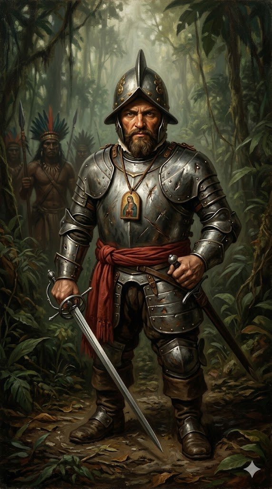

אלונסו דה אוחדה

לחץ על התמונה להגדלה
מקור ומשמעות השם המלא (אטימולוגיה)
שם פרטי: אלונסו (Alonso)
השם "אלונסו" הוא גרסה ספרדית קסטיליינית עתיקה לשם הפופולרי "אלפונסו" (Alfonso), שמקורו בשפות הגרמאניות של השבטים הוויזיגותים ששלטו בספרד בימי הביניים המוקדמים.
פירוש מילולי: השם נגזר מהמילים הגרמאניות "Adal" (אציל) ו-"Funs" (מוכן, נכון לקרב, אמיץ). המשמעות הכוללת היא "אציל ונכון לקרב" או "האציל האמיץ". שם זה התאים בצורה מושלמת לחייו של אוחדה – לוחם שהיה תמיד הראשון לשלוף את חרבו.
שם משפחה: דה אוחדה (de Ojeda)
שם המשפחה הוא שם טופונימי מובהק – שם שמעיד על מקום המוצא הגיאוגרפי של משפחתו.
פירוש המקום: השם מתייחס לעמק ולנהר אוחדה (Ojeda) הממוקם בצפון ספרד (מחוז פלנסיה). השורש הבלשני של המילה "אוחדה" נובע מהמילה הלטינית "Folia" (עלים) או מהמילה הערבית "Oja", ומתייחס לאזור של נהר עטור בעלווה עבותה או מוקף בצמחייה ירוקה. הקידומת "דה" (de - מן) מעידה על כך שמשפחתו השתייכה למעמד אצולת הקרקע המקומית.
ילדות, אצולה ענייה ובית ספר ללחימה
אלונסו דה אוחדה נולד בעיר קואנקה (Cuenca) שבמרכז ספרד. הוא נולד אל תוך משפחת אצולה שירדה מנכסיה (Hidalgo) – מעמד שתסכל אותו עמוקות ודחף אותו לחפש תהילה ועושר בדרכים אחרות.
בילדותו הוא נשלח לשמש כנושא כלים ומשרת בחצרו של הדוכס ממדינצ'לי (Duke of Medinaceli), אחד האצילים החזקים בספרד (שאגב, תמך גם בקולומבוס בתחילת דרכו). החצר שימשה עבורו כבית ספר אקדמי וצבאי. אוחדה התגלה כנער חריג: למרות שהיה נמוך קומה באופן בולט, הוא ניחן בזריזות יוצאת דופן, בכוח פיזי אדיר, וביכולת סיוף (לחימה בחרב) חסרת תקדים.
עוד בטרם חצה את האוקיינוס, הוא השתתף במלחמת ה"רקונקיסטה" לכיבוש גרנדה (המעוז המוסלמי האחרון בספרד) בשנת 1492. במלחמה זו הוא הוכיח את עצמו כלוחם אמיץ, פזיז וכמעט חסר פחד מהמוות – תכונות שיהפכו אותו לאב-הטיפוס של הקונקיסטאדור הספרדי באמריקה.
אידאולוגיה, מניעים (ה"קונקיסטאדור" הראשון)
אלונסו דה אוחדה הוא ההתגלמות המדויקת של מושג ה"קונקיסטאדור" – כובש ספרדי המונע על ידי השילוש ההיסטורי המפורסם: זהב, תהילה, ואלוהים (Gold, Glory, God).
המניע הכלכלי והאישי: כאציל עני, אוחדה ראה בעולם החדש הזדמנות פז להתעשרות מהירה (באמצעות ביזת זהב וסחר עבדים) וצבירת קרקעות. הוא חיפש תהילה אישית שלא היה יכול להשיג בספרד עצמה. הוא היה יהיר, מהיר חימה, ולא היסס לפתוח באלימות נגד הילידים, ולעיתים גם נגד פקודיו הספרדים.
הפנאטיות הדתית: למרות אכזריותו בקרב, אוחדה היה קתולי פנאטי. הוא פיתח הערצה כמעט עיוורת לבתולה מרים. הוא סחב עמו לכל מקום ציור קטן ושמן של הבתולה (שניתן לו על ידי בישוף), והיה משוכנע שכל עוד הציור איתו, הוא בלתי מנוצח ושום נשק לא יוכל לפגוע בו. ואכן, ברוב קרבותיו המוקדמים הוא מעולם לא נשרט, מה שחיזק את המיתוס האישי שלו כמשיח-קרב.
נסיבות היסטוריות: שבירת המונופול של קולומבוס
אוחדה כבר חצה את האוקיינוס במסעו השני של קולומבוס (1493), שם פיקד על חיל מצב והתפרסם באכזריותו כשדיכא באלימות התקוממויות של שבטי הטאינו.
אך שעת הכושר האמיתית שלו הגיעה בשנת 1499. המלכים הקתוליים, פרדיננד ואיזבלה, החלו לאבד סבלנות כלפי הניהול הכושל והעריצי של קולומבוס במושבה היספניולה. במקביל, הם שמעו על התגליות של ג'ון קבוט באנגליה ושל הפורטוגלים, והבינו שאם ישאירו את המונופול לחקר המערב בידיו הבלעדיות של קולומבוס – ספרד תפסיד את המרוץ.
לכן, בחסותו של בישוף חזק בשם חואן רודריגז דה פונסקה, הכתר הספרדי הפר את החוזה עם קולומבוס והחל לחלק רישיונות חקר לספנים אחרים (מה שנקרא "המסעות האנדלוסיים"). אלונסו דה אוחדה היה הראשון לקבל רישיון כזה, בזכות קשריו הפוליטיים והמוניטין הצבאי שלו.
המסע של 1499: גילוי ונצואלה ("ונציה הקטנה")
במאי 1499 יצא אוחדה בראש משלחת של שלוש ספינות מנמל קאדיס. לצידו היו שניים מהמוחות הגדולים של התקופה: הקרטוגרף המבריק חואן דה לה קוסה (Juan de la Cosa), והבנקאי/נווט האיטלקי אמריגו וספוצ'י.
המראה הזה הזכיר מיד לוספוצ'י האיטלקי ולאוחדה את התעלות של העיר ונציה באיטליה. אוחדה קרא לאזור "ונצואלה" (Venezuela) – שפירושו המילולי בספרדית הוא "ונציה הקטנה" (Little Venice). שם זה דבק באזור והפך לשמה של המדינה המודרנית.
מסעות מאוחרים, חצים מורעלים והסוף הטרגי
לאחר שחזר לספרד עם שלל רב של עבדים ופנינים, אוחדה הפך לגיבור. הכתר מינה אותו ב-1502 למושל "קוקיבקואה" (בצפון דרום אמריקה), אך מושבה זו קרסה עקב רעב, מחלות, והתנהגותו הרודנית שהובילה את פקודיו למרוד בו ולכלוא אותו.
בקרב נוראי אחד, הקרטוגרף המהולל חואן דה לה קוסה נהרג ממאות חצים מורעלים. גם אוחדה, הלוחם ה"בלתי מנוצח", נורה בירכו. כדי להציל את חייו, אוחדה הפגין קשיחות פסיכוטית: הוא ציווה על רופאו (תחת איום מוות) לחמם שתי צלחות ברזל עד לליבון, והצמיד אותן ישירות לתוך הפצע הפתוח שלו כדי לשרוף את הרעל. הוא שרד את הכווייה ואת הרעל, אך המושבה נכשלה, והוא נאלץ להימלט לסנטו דומינגו.
בקשתו האחרונה (וצוואתו) הייתה אחת הדרמטיות בהיסטוריה: הוא סירב להיקבר בקבר מכובד. הוא ביקש להיקבר ממש מתחת למפתן הדלת של מנזר סן פרנסיסקו, כך שכל אדם שייכנס להתפלל ייאלץ לדרוך על קברו, ככפרה ניצחית על גאוותו, אכזריותו וחטאיו הרבים.
מקורות וביבליוגרפיה (אימות מחקר)
- "היסטוריה של האינדים" (Historia de las Indias): נכתב על ידי ההיסטוריון והנזיר ברטולומה דה לאס קאסאס בן התקופה. לאס קאסאס מתאר את אוחדה בפירוט כדמות אכזרית במיוחד כלפי האינדיאנים, אך מודה באומץ ליבו יוצא הדופן. מתעד את סיפור החצים המורעלים ואת מותו.
- מחקר ביוגרפי והיסטורי: Irving, Washington (1831). Voyages and Discoveries of the Companions of Columbus. (ספר קלאסי המתמקד בסגניו של קולומבוס ומעניק תיאור דרמטי מאוד לחייו הקרביים של אוחדה).
- מחקר אקדמי על ה"קונקיסטה": Thomas, Hugh (2003). Rivers of Gold: The Rise of the Spanish Empire, from Columbus to Magellan. (מנתח את משמעות "המסעות האנדלוסיים" ותחילת סיום המונופול של קולומבוס).